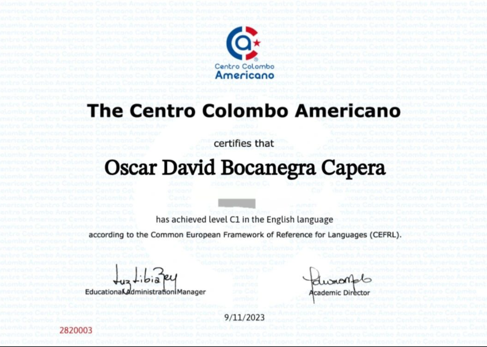
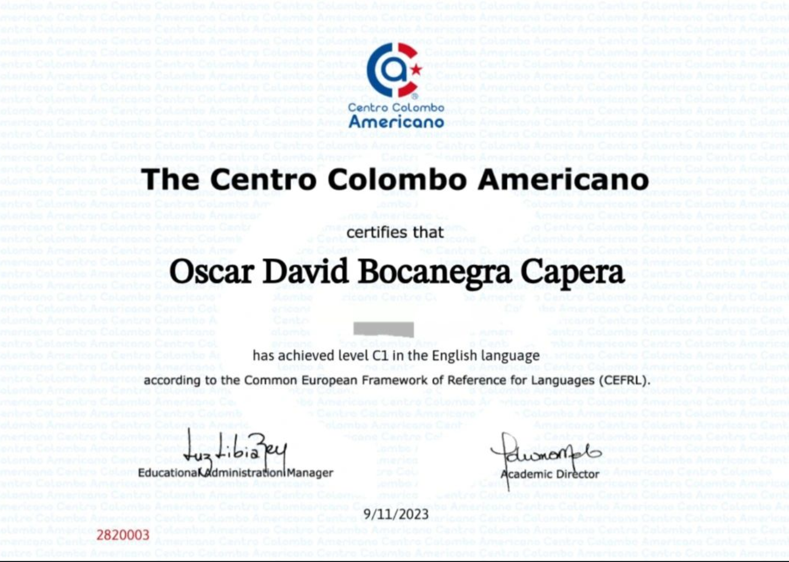

Sobre Mí
Soy ingeniero informático en proceso de formación y crecimiento.
Soy una persona autodidacta buscando la mejora continua, aprendiendo cada día todo lo relacionado con el mundo de la tecnología.
Actualmente me estoy formando como ingeniero informático en la universidad internacional de la Rioja (UNIR) y también soy alumno activo de la plataforma Platzi, Udemy en donde fortalezco mis habilidades técnicas en temas como:
Git y Github para versionar el código, desarrollo de Software en Python, Java, JavaScript y temas relacionados con programación orientada a objetos además de esto también con conocimiento en las bases de datos.
Educación y certificaciones.
Habilidades técnicas y blandas.

 
